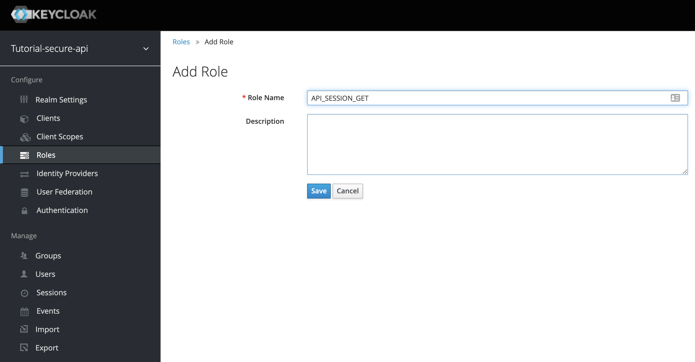
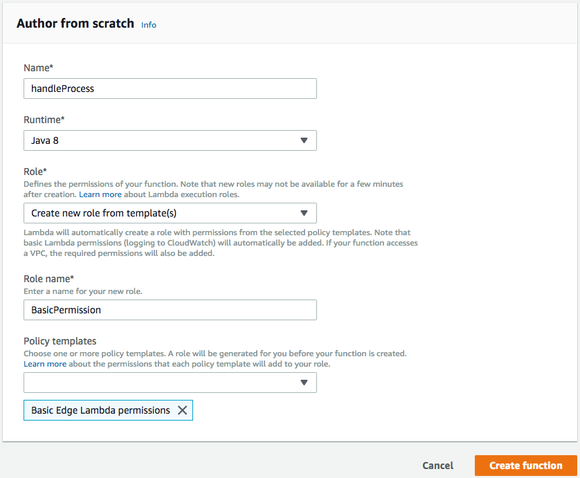
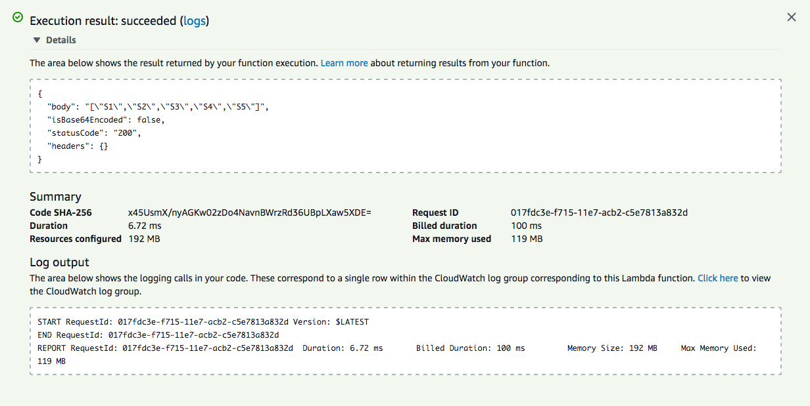

What is API Framework ?
API Framework is structured code/pattern/project template for you to write API based system using Vertx Framework (http://vertx.io/).
Idea is to provide structure to development project, so, that with minimum learning curve, programmers can become productive. Understanding of Vertx and API Framework project setup is enough to build complex application.
Features
-
Code and Configuration is completely separate.
-
Decoupled source code level dependencies between classes.
-
Configuration has layer concept to change configuration without changing original configuration
-
Fully Reactive
-
Build is ready for serverless deployment (AWS Lambda).
-
Build is ready for Docker deployment
-
Zero installation. Copy paste and run. Easy cloud deployment.
-
Component based development and build for extension.
-
High performance (Based on Vertx).
-
Support all Vertx supported languages.
-
Open API 3 based API Definition.
-
Out of box Keycloak integration to create API Gateway.
-
Easy component based testing model.
-
Excellent implementation pattern repository to meet most of the use cases for any complex project
-
Easy to learn
|
Note
|
For dependency and configuration management. We have used Glue project. |
Simple GET API
We will create simple session API to get list of dummy session.
Create Maven Project using Netbean
|
Note
|
Below steps are optional. You can clone API Framework Start project and use tutorial-simple-get-api project. |
-
Create Project Folder tutorial-simple-get-api. This will be used as a base folder.
-
Create new project

-
Save project to tutorial-simple-get-api location

-
Add required dependencies to POM
1 <dependency> 2 <groupId>in.erail</groupId> 3 <artifactId>api-framework</artifactId> 4 <version>${api.framework.version}</version> 5 </dependency> 6 <dependency> 7 <groupId>in.erail</groupId> 8 <artifactId>api-framework</artifactId> 9 <version>${api.framework.version}</version> 10 <classifier>common-config</classifier> 11 <type>zip</type> 12 </dependency> -
Additional project dependencies
1 <dependency> 2 <groupId>io.vertx</groupId> 3 <artifactId>vertx-junit5</artifactId> 4 <version>3.6.3</version> 5 <scope>test</scope> 6 </dependency> 7 <dependency> 8 <groupId>org.junit.jupiter</groupId> 9 <artifactId>junit-jupiter-api</artifactId> 10 <version>5.4.0</version> 11 <scope>test</scope> 12 </dependency> 13 <dependency> 14 <groupId>org.junit.jupiter</groupId> 15 <artifactId>junit-jupiter-engine</artifactId> 16 <version>5.4.0</version> 17 <scope>test</scope> 18 </dependency> -
Create tutorial-simple-get-api/config-layers/common and tutorial-simple-get-api/config-layers/test folder to store all configuration
Notecommon configuration is for production use. test configuration can be used to add new or override any configuration during unit test -
Create tutorial-simple-get-api/src/assembly/common-config.xml
1 <?xml version="1.0" encoding="UTF-8"?> 2 <assembly xmlns="http://maven.apache.org/plugins/maven-assembly-plugin/assembly/1.1.2" 3 xmlns:xsi="http://www.w3.org/2001/XMLSchema-instance" 4 xsi:schemaLocation="http://maven.apache.org/plugins/maven-assembly-plugin/assembly/1.1.2 http://maven.apache.org/xsd/assembly-1.1.2.xsd"> 5 <id>common-config</id> 6 <formats> 7 <format>zip</format> 8 </formats> 9 <includeBaseDirectory>false</includeBaseDirectory> 10 <fileSets> 11 <fileSet> 12 <outputDirectory>/config</outputDirectory> 13 <directory>${project.basedir}/config-layers/common</directory> 14 </fileSet> 15 </fileSets> 16 </assembly>
This configuration will make sure that your common-config config layers is packed and installed as artefact in maven repository.
-
Add plugins to Maven
1 <plugin> 2 <groupId>org.apache.maven.plugins</groupId> 3 <artifactId>maven-jar-plugin</artifactId> 4 <version>3.1.1</version> 5 <configuration> 6 <archive> 7 <manifest> 8 <addClasspath>true</addClasspath> 9 <mainClass>in.erail.glue.Boot</mainClass> 10 </manifest> 11 </archive> 12 </configuration> 13 </plugin> 14 <plugin> 15 <artifactId>maven-assembly-plugin</artifactId> 16 <version>3.1.0</version> 17 <executions> 18 <execution> 19 <id>common-config</id> 20 <phase>package</phase> 21 <goals> 22 <goal>single</goal> 23 </goals> 24 <configuration> 25 <descriptors> 26 <descriptor>src/assembly/common-config.xml</descriptor> 27 </descriptors> 28 </configuration> 29 </execution> 30 <execution> 31 <id>lambda-deployment</id> 32 <phase>package</phase> 33 <goals> 34 <goal>single</goal> 35 </goals> 36 <configuration> 37 <descriptors> 38 <descriptor>src/assembly/lambda-deployment.xml</descriptor> 39 </descriptors> 40 <attach>false</attach> 41 </configuration> 42 </execution> 43 </executions> 44 </plugin> 45 <plugin> 46 <groupId>org.apache.maven.plugins</groupId> 47 <artifactId>maven-surefire-plugin</artifactId> 48 <version>2.22.1</version> 49 <configuration> 50 <argLine>-Dvertx.logger-delegate-factory-class-name=io.vertx.core.logging.Log4j2LogDelegateFactory -Dglue.layers=${settings.localRepository}/in/erail/api-framework/${api.framework.version}/api-framework-${api.framework.version}-common-config.zip,${project.basedir}/config-layers/common,${project.basedir}/config-layers/test</argLine> 51 </configuration> 52 </plugin>Argument LineTo pass correct layer parameters to Test, we use argLine.
1 <plugin> 2 <groupId>org.apache.maven.plugins</groupId> 3 <artifactId>maven-surefire-plugin</artifactId> 4 <version>2.22.1</version> 5 <configuration> 6 <argLine>-Dvertx.logger-delegate-factory-class-name=io.vertx.core.logging.Log4j2LogDelegateFactory -Dglue.layers=${settings.localRepository}/in/erail/api-framework/${api.framework.version}/api-framework-${api.framework.version}-common-config.zip,${project.basedir}/config-layers/common,${project.basedir}/config-layers/test</argLine> 7 </configuration> 8 </plugin>Argument Value Description vertx.logger-delegate-factory-class-name
io.vertx.core.logging.Log4j2LogDelegateFactory
Enable Log4J based logging.
glue.layers
Layer Description ${settings.localRepository}/in/erail/api-framework/1.0-SNAPSHOT/api-framework-1.0-SNAPSHOT-common-config.zip
API Framework Configuration Layer
${project.basedir}/config-layers/common
Our project configuration layer
${project.basedir}/config-layers/test
Our project test configuration layer. Any test specific configuration can be done in this layer
All configuration layers.
NoteConfiguration layers are read in same order as defined in argument. Layer configuration is read from left to right. Means, right configuration will override left configuration, if same configuration is also present in right layer. NoteConfiguration are managed at individual property level. Please refer to Glue to understand how layers are merged.
Step 1: Create Open API 3 Service Definition
To make life easy, we have used Apicurio to create Open API 3 definition. Below is definition
1 {
2 "openapi": "3.0.0",
3 "info": {
4 "title": "tutorial-api",
5 "version": "1.0.0"
6 },
7 "paths": {
8 "/session": {
9 "get": {
10 "summary": "Get all session messages",
11 "description": "Return all session messages",
12 "operationId": "API_SESSION_GET",
13 "responses": {
14 "200": {
15 "description": "Return all messages",
16 "content": {
17 "application/json": {
18 "schema": {
19 "type": "array",
20 "items": {
21 "$ref": "#/components/schemas/message"
22 }
23 }
24 }
25 }
26 }
27 }
28 }
29 }
30 },
31 "components": {
32 "schemas": {
33 "message": {
34 "title": "Root Type for message",
35 "description": "The root of the message type's schema.",
36 "type": "object",
37 "properties": {
38 "message": {
39 "type": "string"
40 },
41 "time": {
42 "type": "string"
43 }
44 }
45 }
46 }
47 }
48 }Our API will have single URL /session (like http://localhost:8888/v1/session).
|
Note
|
Remember API Session is not related to actual Vertx Web Session. |
On get request, session API will return all session messages.
|
Note
|
Each method requiring processing must have unique OperationId. OperationId is used for processing request from method. |
Configure API Framework to use service definition
Copy openapi3.json to config-layers/common/in/erail/route/openapi3.json. Now API Framework is configured to handle API Request. Next step is to write code to handle request.
Step 2: Write API Request Handling
Basic request handling flow
actor User autonumber User -> Server: /session activate Server Server -> EventBus: Send message on \n**OperationId** (Open API) EventBus -> Service: **OperationId** is mapped to \n**ServiceUnquieId**. Service \n\ listen on **ServiceUniqueId** \n for any API Request Service --> EventBus:Service sends response \nas reply to EventBus Message EventBus --> Server Server --> User deactivate Server
-
Request Processing (Step 1 and 6) is synchronous. In case Service fails to response within predefined time limit (/io/vertx/core/eventbus/DeliveryOptions.sendTimeout). request is canceled and fail response is sent back.
-
For each operationId defined in Open API definition, a service is registered. Service contains mapping of Operation Id and UniqueServiceId. Whenever request comes it is converted into EventBus message and sent on UniqueServiceId (Steps 2-3).
-
Step 2-5 are asynchronous.
Handle GET method called on /session URL
Create Service Class
1 package in.erail.tutorial;
2
3 import com.google.common.net.MediaType;
4 import in.erail.model.Event;
5 import in.erail.service.RESTServiceImpl;
6 import io.reactivex.Maybe;
7 import io.reactivex.MaybeSource;
8 import io.vertx.core.json.JsonArray;
9
10 public class SessionGetService extends RESTServiceImpl {
11
12 private JsonArray mSessions = new JsonArray();
13
14 public SessionGetService() {
15 mSessions.add("S1");
16 mSessions.add("S2");
17 mSessions.add("S3");
18 mSessions.add("S4");
19 mSessions.add("S5");
20 }
21
22 @Override
23 public MaybeSource<Event> process(Maybe<Event> pEvent) {
24 return pEvent
25 .doOnSuccess((e) -> {
26 e.getResponse()
27 .setBody(getSessions().toString().getBytes())
28 .setMediaType(MediaType.JSON_UTF_8);
29 });
30 }
31
32 public JsonArray getSessions() {
33 return mSessions;
34 }
35
36 public void setSessions(JsonArray pSessions) {
37 this.mSessions = pSessions;
38 }
39
40 }Service class must implement in.erail.service.RESTService interface. A helper class is
provided to ease development in.erail.service.RESTServiceImpl
As parameter, Message Object provides JsonObject. JsonObject contains below fields
| Field Name | Description |
|---|---|
headers |
Contains all request headers |
pathParameters |
Contains all request parameters |
queryStringParameters |
Contains all query parameters |
body |
In case of POST request, contains body |
Reply JSON Object you can have below fields
| Field Name | Default | Description |
|---|---|---|
headers |
No headers are added |
Headers will be added to response header |
body |
Response content is blank |
Body is sent in response |
statusCode |
200 |
Response HTTP status |
Create Service Component
Create below Component configuration file and place it in /config-layers/common/in/erail/tutorial/SessionGetService
1 #/in/erail/tutorial/SessionGetService
2 $class=in.erail.tutorial.SessionGetService
3
4 operationId=API_SESSION_GET
5 serviceUniqueId=API_SESSION_GET
6 vertx=/io/vertx/core/Vertx
7 enable=true
8 log=trueIn above configuration, operationId and serviceUniqueId are same. But, you can give
serviceUniqueId different name, make sure that it is unique across all services.
Add service to OpenAPI3RouteBuilder
1 #/in/erail/route/OpenAPI3RouteBuilder
2
3 services+=\
4 /in/erail/tutorial/SessionGetServiceOpenAPI3RouteBuilder will make sure, that, request received on URL with
operationId as defined in SessionService component is forwarded to serviceUniqueId
component via EventBus.
Now, our API is ready to use. Lets create a test class to test our service.
Step 3: Write Test to test our service
1 package in.erail.tutorial;
2
3 import com.google.common.net.HttpHeaders;
4 import com.google.common.net.MediaType;
5 import in.erail.glue.Glue;
6 import in.erail.server.Server;
7 import io.vertx.core.json.JsonArray;
8 import io.vertx.junit5.Timeout;
9 import io.vertx.junit5.VertxExtension;
10 import io.vertx.junit5.VertxTestContext;
11 import io.vertx.reactivex.ext.web.client.WebClient;
12 import java.util.concurrent.TimeUnit;
13 import org.junit.jupiter.api.Assertions;
14 import org.junit.jupiter.api.Test;
15 import org.junit.jupiter.api.extension.ExtendWith;
16
17 @ExtendWith(VertxExtension.class)
18 @Timeout(value = 10, timeUnit = TimeUnit.MINUTES)
19 public class SessionTest {
20
21 @Test
22 public void testGetRequest(VertxTestContext testContext) {
23
24 Server server = Glue.instance().<Server>resolve("/in/erail/server/Server");
25
26 WebClient
27 .create(server.getVertx())
28 .get(server.getHttpServerOptions().getPort(), server.getHttpServerOptions().getHost(), "/v1/session")
29 .putHeader(HttpHeaders.CONTENT_TYPE, MediaType.JSON_UTF_8.toString())
30 .rxSend()
31 .doOnSuccess(response -> Assertions.assertEquals(200, response.statusCode()))
32 .doOnSuccess((t) -> {
33 JsonArray data = t.bodyAsJsonArray();
34 Assertions.assertEquals(5, data.size());
35 })
36 .subscribe(t -> testContext.completeNow(), err -> testContext.failNow(err));
37 }
38
39 }Step 4: Run API Server
After running maven install. You should have build folder inside target folder.
@startsalt
{
{T
+ **build**
++ tutorial-simple-get-api-1.0-SNAPSHOT.jar
++ tutorial-simple-get-api-1.0-SNAPSHOT-lib
+++ dependencies
++ config
+++ api-framework-1.0-SNAPSHOT-common-config.zip
+++ tutorial-simple-get-api-1.0-SNAPSHOT-common-config.zip
}
}
@endsalt
1 java \
2 -Dvertx.logger-delegate-factory-class-name=io.vertx.core.logging.Log4j2LogDelegateFactory \
3 -Dglue.layers=\
4 ./config/api-framework-1.0-SNAPSHOT-common-config.zip,\
5 ./config/tutorial-simple-get-api-1.0-SNAPSHOT-common-config.zip \
6 -jar tutorial-simple-get-api-1.0-SNAPSHOT.jarGo to command prompt
1 curl http://localhost:8888/v1/session["S1","S2","S3","S4","S5"]
Simple POST API
In this tutorial, we will extend last tutorial to create POST method on /session URL. Using POST request, we will update session and using GET request we will get all sessions.
Step 1: Extend Open API 3 Service Definition
We have extended Open API 3 definition created in last tutorial. We have added post method.
1 {
2 "openapi": "3.0.0",
3 "info": {
4 "title": "tutorial-api",
5 "version": "1.0.0"
6 },
7 "paths": {
8 "/session": {
9 "get": {
10 "summary": "Get all session messages",
11 "description": "Return all session messages",
12 "operationId": "API_SESSION_GET",
13 "responses": {
14 "200": {
15 "description": "Return all messages",
16 "content": {
17 "application/json": {
18 "schema": {
19 "type": "array",
20 "items": {
21 "$ref": "#/components/schemas/message"
22 }
23 }
24 }
25 }
26 }
27 }
28 },
29 "post": {
30 "summary": "Post message on session",
31 "description": "Post message on session",
32 "operationId": "API_SESSION_POST",
33 "responses": {
34 "200": {
35 "description": "Post Message",
36 "content": {
37 "application/json": {
38 "schema": {
39 "type": "string"
40 }
41 }
42 }
43 }
44 },
45 "requestBody": {
46 "content": {
47 "application/json": {
48 "schema": {
49 "$ref": "#/components/schemas/message"
50 }
51 }
52 },
53 "required": true
54 }
55 }
56 }
57 },
58 "components": {
59 "schemas": {
60 "message": {
61 "title": "Root Type for message",
62 "description": "The root of the message type's schema.",
63 "type": "object",
64 "properties": {
65 "message": {
66 "type": "string"
67 },
68 "time": {
69 "type": "string"
70 }
71 }
72 }
73 }
74 }
75 }-
POST : You can post data to session using post request.
Post Data Format{ "session" : "random" } -
GET : On get request, session API will return all session messages.
Get Data Format[ {"session" : "random"}, {"session" : "random"}, {"session" : "random"}, {"session" : "random"} ]
|
Note
|
Each method requiring processing must have unique OperationId. OperationId is used for processing request from method. |
Step 2: Create POST Service Class
1 package in.erail.tutorial;
2
3 import com.google.common.base.Joiner;
4 import com.google.common.base.Splitter;
5 import in.erail.model.Event;
6 import in.erail.model.RequestEvent;
7 import in.erail.model.ResponseEvent;
8 import in.erail.service.RESTServiceImpl;
9 import io.reactivex.Maybe;
10 import io.reactivex.MaybeSource;
11 import io.vertx.core.json.JsonObject;
12 import io.vertx.reactivex.core.shareddata.LocalMap;
13 import java.util.List;
14
15 /**
16 * Store session data in LocalMap.
17 */
18 public class SessionPostService extends RESTServiceImpl {
19
20 @Override
21 public MaybeSource<Event> process(Maybe<Event> pEvent) {
22 return pEvent.flatMap(this::handle);
23 }
24
25 public Maybe<Event> handle(Event pEvent) {
26 LocalMap<String, String> data = getVertx().sharedData().getLocalMap("data");
27 String sessions = data.getOrDefault("sessions", "");
28 JsonObject paramSession = new JsonObject(pEvent.getRequest().bodyAsString());
29 List<String> items = Splitter.on(",").omitEmptyStrings().trimResults().splitToList(sessions + "," + paramSession.getString("session"));
30 data.put("sessions", Joiner.on(",").join(items));
31 return Maybe.just(pEvent);
32 }
33
34 }Create Service Component
Create below Component configuration file and place it at config-layers/common/in/erail/tutorial/SessionPostService.properties
1 #/in/erail/tutorial/SessionPostService
2 $class=in.erail.tutorial.SessionPostService
3
4 operationId=API_SESSION_POST
5 serviceUniqueId=API_SESSION_POST
6 vertx=/io/vertx/core/Vertx
7 enable=true
8 log=trueAdd service to OpenAPI3RouteBuilder
1 #/in/erail/route/OpenAPI3RouteBuilder
2
3 services+=\
4 /in/erail/tutorial/SessionGetService,\
5 /in/erail/tutorial/SessionPostServiceStep 3: Update Get Service
We will update Get service to return sessions stored by post request. Instead of updating existing SessionGetService class. We will create new class.
1 package in.erail.tutorial;
2
3 import io.vertx.core.json.JsonArray;
4 import io.vertx.reactivex.core.shareddata.LocalMap;
5 import java.util.Arrays;
6
7 public class SessionGetServiceV2 extends SessionGetService {
8
9 @Override
10 public JsonArray getSessions() {
11 LocalMap<String, String> data = getVertx().sharedData().<String, String>getLocalMap("data");
12 String sessions = data.getOrDefault("sessions", "");
13
14 JsonArray result = new JsonArray();
15 Arrays.stream(sessions.split(",")).forEach((s) -> {
16 result.add(s);
17 });
18
19 return result;
20 }
21
22 }To use our new class, we have to simply change component class
1 #/in/erail/tutorial/SessionGetService
2 $class=in.erail.tutorial.SessionGetServiceV2
3
4 operationId=API_SESSION_GET
5 serviceUniqueId=API_SESSION_GET
6 vertx=/io/vertx/core/Vertx
7 enable=true
8 log=trueNow, our API is ready to use. Lets create a test class to test our service.
Step 4: Write Test to test our service
1 package in.erail.tutorial;
2
3 import com.google.common.net.HttpHeaders;
4 import com.google.common.net.MediaType;
5 import in.erail.glue.Glue;
6 import in.erail.server.Server;
7 import io.reactivex.Observable;
8 import io.vertx.core.json.JsonArray;
9 import io.vertx.core.json.JsonObject;
10 import io.vertx.junit5.Timeout;
11 import io.vertx.junit5.VertxExtension;
12 import io.vertx.junit5.VertxTestContext;
13 import io.vertx.reactivex.ext.web.client.WebClient;
14 import java.util.concurrent.TimeUnit;
15 import org.junit.jupiter.api.Assertions;
16 import org.junit.jupiter.api.Test;
17 import org.junit.jupiter.api.extension.ExtendWith;
18
19 @ExtendWith(VertxExtension.class)
20 @Timeout(value = 10, timeUnit = TimeUnit.MINUTES)
21 public class SessionTest {
22
23 @Test
24 public void testPostRequest(VertxTestContext testContext) {
25
26 Server server = Glue.instance().<Server>resolve("/in/erail/server/Server");
27 String content = new JsonObject().put("session", "random").toString();
28
29 Observable
30 .range(0, 5)
31 .flatMapSingle((t) -> {
32 return WebClient
33 .create(server.getVertx())
34 .post(server.getHttpServerOptions().getPort(), server.getHttpServerOptions().getHost(), "/v1/session")
35 .putHeader(HttpHeaders.CONTENT_TYPE, MediaType.JSON_UTF_8.toString())
36 .rxSendJsonObject(new JsonObject().put("session", "random"));
37 })
38 .doOnNext(response -> Assertions.assertEquals(200, response.statusCode()))
39 .ignoreElements()
40 .andThen(
41 WebClient
42 .create(server.getVertx())
43 .get(server.getHttpServerOptions().getPort(), server.getHttpServerOptions().getHost(), "/v1/session")
44 .putHeader(HttpHeaders.CONTENT_TYPE, MediaType.JSON_UTF_8.toString())
45 .rxSend()
46 )
47 .doOnSuccess(response -> Assertions.assertEquals(200, response.statusCode()))
48 .doOnSuccess((t) -> {
49 JsonArray data = t.bodyAsJsonArray();
50 Assertions.assertEquals(5, data.size());
51 })
52 .subscribe(t -> testContext.completeNow(), err -> testContext.failNow(err));
53 }
54
55 }Step 4: Run API Server
After running maven install. You should have build folder inside target folder.
@startsalt
{
{T
+ **build**
++ tutorial-simple-post-api-1.0-SNAPSHOT.jar
++ tutorial-simple-post-api-1.0-SNAPSHOT-lib
+++ dependencies
++ config
+++ api-framework-1.0-SNAPSHOT-common-config.zip
+++ tutorial-simple-post-api-1.0-SNAPSHOT-common-config.zip
}
}
@endsalt
1 java \
2 -Dvertx.logger-delegate-factory-class-name=io.vertx.core.logging.Log4j2LogDelegateFactory \
3 -Dglue.layers=\
4 ./config/api-framework-1.0-SNAPSHOT-common-config.zip,\
5 ./config/tutorial-simple-post-api-1.0-SNAPSHOT-common-config.zip \
6 -jar tutorial-simple-post-api-1.0-SNAPSHOT.jarGo to command prompt
1 #Post data
2 curl -XPOST -H "Content-type: application/json" -d '{"session" : "message1"}' 'http://localhost:8888/v1/session'
3 curl -XPOST -H "Content-type: application/json" -d '{"session" : "message2"}' 'http://localhost:8888/v1/session'
4
5 #Get data
6 curl http://localhost:8888/v1/session["message1","message2"]
Secure API
In previous tutorials, we created, Get and Post Session APIs. Now, in this tutorial we will use Open Id Connect pattern to secure both APIs.
Things we will do in this tutorial:
-
Setup and configure Keycloak instance
-
Create small website to showcase authenticated API working
Keycloak Setup
Install
To reduce complexity of installation. We will run Keycloak in docker. Depending on your OS, install Docker
TLDR
-
Docker Compose: File already provided. To start keycloak instance use docker compose up to start keycloak
-
Keycloak Configuration: Full configuration is already provided which can be imported to create realm required for this tutorial (docker/realm-export.json). If you are importing realm, then only thing left is to create user.
Create docker compose file at tutorial-secure-api/docker
1 version: '3.2'
2 services:
3 openidserver:
4 image: jboss/keycloak:4.8.3.Final
5 hostname: openidserver
6 expose:
7 - 8080
8 ports:
9 - "8080:8080"
10 environment:
11 - KEYCLOAK_USER=admin
12 - KEYCLOAK_PASSWORD=RM99Q330Tg
13 - KEYCLOAK_LOGLEVEL=DEBUG
14 - DB_VENDOR=MYSQL
15 - MYSQL_DATABASE=keycloak
16 - MYSQL_USER=keycloak
17 - MYSQL_PASSWORD=8HVcBB5FMv
18 - MYSQL_PORT_3306_TCP_ADDR=mysql
19 - MYSQL_PORT_3306_TCP_PORT=3306
20 depends_on:
21 - mysql
22 mysql:
23 image: mysql:5.7
24 hostname: mysql
25 expose:
26 - 3306
27 volumes:
28 - ./data/mysql/keycloak/data:/var/lib/mysql
29 environment:
30 - MYSQL_ROOT_PASSWORD=KgWVt9jCUq
31 - MYSQL_DATABASE=keycloak
32 - MYSQL_USER=keycloak
33 - MYSQL_PASSWORD=8HVcBB5FMv1 docker-compose upConfiguration
Got to http://localhost:8080/auth/admin/ and login using admin and use password as provided in docker-compose.yml
Add Open ID Connect Client
Update Settings
|
Note
|
To know all URLs supported by Realm got to OpenID Endpoint Configuration. This information can be accessed from Realm Settings → General → Endpoint |
Add Role for each API Operation
In Open API 3 definition, we have Operation Id for each operation. Corresponding to each operation, we will create Role in Keycloak. To access any operation, user must have role assigned to him in Keycloak.
| Group | Role(=Operation Id) | Description |
|---|---|---|
Full Access |
API_SESSION_GET |
Client will be able to make GET request |
API_SESSION_POST |
Client will be able to make POST request |
Lets create Role for our APIs. Go to Roles section
-
Add new role
-
Create API_SESSION_GET and API_SESSION_POST roles
Figure 2. API_SESSION_POST Role exampleFigure 3. API_SESSION_POST SettingsFigure 4. All role list
Add Group
Though roles can be assigned to user directly. Group concept is nice way of managing user groups and roles associated to groups are automatically inherited by its users.
-
Add group
-
Create group
-
Group and role mapping
Figure 5. Add both API_SESSION_GET and API_SESSION_POST roles
Add User
We will use this user to login
-
Go to Users section
-
Click on Add user

-
Update password
-
Confirm
-
Add user to group
Figure 6. Add user to Full Access group
Create site to use API (No Authentication)
Ideally, you will run only API on API Framework and content will be delivered from somewhere else like below.
@startuml cloud Internet node Nginx node APIServer node ContentServer Internet -- Nginx Nginx -- APIServer Nginx -- ContentServer @enduml
To keep things simple, for the time been, we will delivery static content from our API server. And overall setup will look as show below
@startuml actor User node Browser node APIServer node KeyclockServer User -- Browser Browser -- APIServer Browser -- KeyclockServer @enduml
Vertx already support static content handling. To enable static content handling, add static content handler to /in/erail/server/Server component
1 #/in/erail/server/Server
2 routerBuilder+=\
3 /content/=/in/erail/route/StaticContentRouteBuillderAbove configuration will make sure that any content in /src/main/resources/webroot is available at http://localhost:8888/content/ url.
A dummy site is already provided /src/main/resources/webroot. You can submit and fetch session updates using API. To access page, goto http://localhost:8888/content/index.html
Create site to use API only after authentication
Same location where we provided Index.html. We have provided Indexsecure.html file. This file is exactly same as Index. But, has Login line with URL. To access page, goto http://localhost:8888/content/indexsecure.html
Enable API Authentication
Configure Open ID Connect
Below configuration is required to use Keycloak as Auth Provider
Add Client Configuration
1 #/io/vertx/ext/auth/oauth2/OAuth2ClientOptions
2 $class=io.vertx.ext.auth.oauth2.OAuth2ClientOptions
3 #Keycloak Client URL
4 site=http://localhost:8080/auth/realms/tutorial-secure-api
5 #Client ID
6 clientID=tutorial-secure-api-client
7 #Client Secret
8 clientSecret=89211430-2f4f-4885-9aa0-e0a0c9c21dc8
9 #Open ID Flow Auth Code
10 flow=AUTH_CODEUse Keycloak Auth Provider
1 #/io/vertx/ext/auth/oauth2/OpenIDConnectAuthFactory
2 #Auth provider to use
3 openIDConnectAuthClass=io.vertx.reactivex.ext.auth.oauth2.providers.KeycloakAuthConfigure Components to use Auth Provider
Configure Callback Router
1 #/in/erail/route/OIDCCallbackRouteBuilder
2
3 authProvider=/io/vertx/ext/auth/oauth2/OAuth2Auth
4 successPath=/content/indexsecure.html
5 failPath=/content/indexsecure.htmlEnable loading of User from Session
1 #/in/erail/route/LoadUserFromSessionRouteBuillder
2 authProvider=/io/vertx/ext/auth/oauth2/OAuth2AuthEnable Security on all Open API Routes
1 #/in/erail/route/OpenAPI3RouteBuilder
2
3 services+=\
4 /in/erail/tutorial/SessionGetService,\
5 /in/erail/tutorial/SessionPostService
6
7 securityEnable=trueRun Server
1 java \
2 -Dvertx.logger-delegate-factory-class-name=io.vertx.core.logging.Log4j2LogDelegateFactory \
3 -Dglue.layers=\
4 ./api-framework-2.4.7-common-config.zip,\
5 ./tutorial-secure-api-1.0-SNAPSHOT-common-config.zip \
6 -jar tutorial-secure-api-1.0-SNAPSHOT.jarTest
Open http://localhost:8888/content/indexsecure.html in brower. You can only add data to session if you are logged in. If user is not logged in, API will get 400.
Amazon Lambda API
Serverless architectures refer to applications that significantly depend on third-party services (knows as Backend as a Service or "BaaS") or on custom code that’s run in ephemeral containers (Function as a Service or "FaaS"), the best known vendor host of which currently is AWS Lambda.
https://martinfowler.com/articles/serverless.html
API Framework allows you to effortlessly run your API code as Lambda function in AWS ecosystem. In this tutorial, we will setup, Amazon API Gateway to access Session GET API (created as part of previous tutorial) and Amazon Lambda to execute Session GET logic.
Lambda Project Setup
We will be extending Amazon Lambda Example Project to run Session GET API. Example Lambda project is setup in Gradle. So, instead of Maven, we will be using Gradle Project for this tutorial.
Gradle Project Files
settings.gradle
1 rootProject.name = 'tutorial-amazon-lambda'This file only contain project name.
build.gradle
1 apply plugin: 'java'
2
3 repositories {
4 mavenCentral()
5 mavenLocal()
6 }
7
8 dependencies {
9 //Only Required Dependecies
10 compile 'in.erail:api-framework-amazon-lambda:2.4.2'
11 compile 'in.erail:api-framework-amazon-lambda:2.4.2:common-config@zip'
12 //Already developed Session GET API Tutorial project
13 compile 'in.erail:tutorial-simple-get-api:1.0-SNAPSHOT'
14 //Session GET API Tutorial project configuration
15 compile 'in.erail:tutorial-simple-get-api:1.0-SNAPSHOT:common-config@zip'
16 }
17
18 task buildZip(type: Zip) {
19 from compileJava
20 from processResources
21 into('lib') {
22 from configurations.runtime
23 }
24 }
25
26 build.dependsOn buildZipapi-framework-amazon-lambda is the required dependency. As we have already done all the work to write session api as part of Simple GET API tutorial. Instead of writing any new code, we have included Simple GET API project as dependency in our project.
gradle.properties
1 #Compilation only for Java 1.8
2 #org.gradle.java.home=/Library/Java/JavaVirtualMachines/jdk1.8.0_152.jdk/Contents/HomeCurrently, Amazon Lambda only supports Java 1.8. In case you are having problem compiling project (Because you have installed Java 1.9). You can specifically JDK here.
Create Build
1 gradle buildZipYour Lambda deployment package will get created at
build/distributions/tutorial-amazon-lambda.zip
Setup Lambda Function
-
Go to AWS Management Console
-
Goto Lambda
Create lambda function using Create Function
-
Create Function Screen
-
Name : handleProcess
-
Runtime : Java 8
-
Role : Create role from template.
-
Role Name : BasicPermission
-
Policy templates : Basic Edge Lambda permissions
-
-
-
Function Code
-
Function Package : Upload tutorial-amazon-lambda.zip file ( Amazon recommends S3 for uploading larger then 10MB file. For simplicity, just upload file directly from here.)
-
Handle : Enter in.erail.amazon.lambda.AWSLambda (Only class package and class name. No handle)
-
Environment Variable
-
JAVA_TOOL_OPTIONS : -Dservice=/in/erail/tutorial/SessionGetService -Dglue.layers=./lib/api-framework-1.0-SNAPSHOT-common-config.zip,./lib/tutorial-simple-get-api-1.0-SNAPSHOT-common-config.zip,./lib/api-framework-amazon-lambda-1.0-SNAPSHOT-common-config.zip -Dvertx.cacheDirBase=/tmp/vertx-cache -Dvertx.logger-delegate-factory-class-name=io.vertx.core.logging.Log4j2LogDelegateFactory -Dlog4j.configurationFile=./log4j2.xml
Java System Properties Env Variable Value Description -Dservice
SERVICE
/in/erail/tutorial/SessionGetService
Service component path. You can pass value as Java System property or as Environment variable
-Dglue.layers
GLUE_LAYERS
./lib/api-framework-1.0-SNAPSHOT-common-config.zip,./lib/tutorial-simple-get-api-1.0-SNAPSHOT-common-config.zip,./lib/api-framework-amazon-lambda-1.0-SNAPSHOT-common-config.zip
Layers to include. Ordered left to right.
-Dvertx.cacheDirBase
/tmp/vertx-cache
Standard Vertx option.
-Dvertx.logger-delegate-factory-class-name
io.vertx.core.logging.Log4j2LogDelegateFactory
Standard Vertx option
-Dlog4j.configurationFile
./log4j2.xml
Standard Vertx option
-
-
-
Basic Settings

Ensure you set memory to 256MB minimum. Or else you will get memory out of exception
-
Create Test Event
-
Event Template : API Gateway AWS Proxy
-
Event Name : SessionGETAPITestEvent
-
Event Body : Though body is POST message. Keep it as it is. Lambda function gets everything as JSON Object. Mapping between correct URL and Method type and Lambda function is managed at API Gateway level. Here we just want to test our Lambda function.
-
-
Test Result

Setup API Gateway
Now our Lambda function is setup. Lets use Amazon API Gateway to expose our API.
-
Create API
-
API name : Tutorial Session Get API
NoteAPI Gateway supports Swagger 2.0. API Framework supports Open API 3 specifications. As Open API 3 specification is becoming industry standard. Expectation is that Amazon will start supporting Open API 3 in future. Till then, you will have to create API manually.
-
-
Create Resource

Our API will be accessible on /session URL.
-
Configure Resource
-
Resource Name : session
-
Resource Path : URL /session
-
-
Create Action
-
GET Action : Create GET action. Configure action as per image.
-
-
Save Action
-
Method Setup
Final API setup
-
Test API
Our API is working!!!
Deploy API
Now, lets make our API public. To make our API public, we will have to create stage. Stage will give us unique URL through which we can access our API (If you want, you can also map this stage to your custom domain) .
|
Note
|
As this is tutorial, we are not using any type of authentication. Please make sure you have right level of access in any stage API. |
-
Deploy API

-
Create new stage
-
Deployment Stage : New Stage
-
Stage Name : tutorial
-
-
Stage Home
Using Invoka URL we can access our API. To access API use below URL.
https://bhpdtkdfek.execute-api.us-east-2.amazonaws.com/tutorial/session
Done!!!
Docker Deployment
In this tutorial, we will package our project created as part of Simple POST API tutorial into Docker image.
Project Setup
We will use Maven project to create build ready for creation of Docker image. If you have done Simple POST API. Then you will find that our POM.xml is almost exactly same.
In docker project, we will generate three config files.
-
API Framework configuration file
-
Post API Tutorial configuration file
-
Docker configuration file (This project)
We have update artefact section. So, after build, you will find 3 configuration files in build/config folder
1 <artifactItems>
2 <artifactItem>
3 <groupId>in.erail</groupId>
4 <artifactId>api-framework</artifactId>
5 <version>${api.framework.version}</version>
6 <classifier>common-config</classifier>
7 <type>zip</type>
8 </artifactItem>
9 <artifactItem>
10 <groupId>in.erail</groupId>
11 <artifactId>tutorial-simple-post-api</artifactId>
12 <version>1.0-SNAPSHOT</version>
13 <classifier>common-config</classifier>
14 <type>zip</type>
15 </artifactItem>
16 </artifactItems>Project configuration layer
Docker configuration layer contains only single configuration file server.properties. This file overrides host property. By default, host property is configured to use localhost. This creates problem where URLs are not accessible from outside Docker container (from Host machine). Using 0.0.0.0, we make sure that URL is accessible from outside also (from Host machine).
1 #/in/erail/server/Server
2 #If host is localhost, Server is not accessible from outside contaner.
3 host=0.0.0.0Build Project Structure
After build your maven project, you will find below structure in target/build folder
@startsalt
{
{T
+ **build**
++ tutorial-docker-1.0-SNAPSHOT.jar
++ tutorial-docker-1.0-SNAPSHOT-lib
+++ dependencies
++ config
+++ api-framework-1.0-SNAPSHOT-common-config.zip
+++ tutorial-simple-post-api-1.0-SNAPSHOT-common-config.zip
+++ tutorial-docker-1.0-SNAPSHOT-common-config.zip
}
}
@endsalt
Dockerfile
Docker file configuration.
1 FROM openjdk:8-jdk
2
3 # Vertx cache
4 ENV VERTX_OPTS -Dvertx.cacheDirBase=/tmp/
5
6 # Set the location of the verticles
7 ENV VERTICLE_HOME /usr/verticle
8
9 COPY ./target/build $VERTICLE_HOME
10 WORKDIR $VERTICLE_HOME
11
12 ENTRYPOINT ["sh","-c"]
13 CMD ["java \
14 -Dglue.layers=./config/api-framework-1.0-SNAPSHOT-common-config.zip,./config/tutorial-simple-post-api-1.0-SNAPSHOT-common-config.zip,./config/tutorial-docker-1.0-SNAPSHOT-common-config.zip \
15 -jar tutorial-docker-1.0-SNAPSHOT.jar"]For your reference, more configuration is provided to you.
1 # Reference Config:
2 # 1. Debug enable
3 # 2. Vertx and Hazelcast JMX enable
4 # 3. G1 garbage collector
5 # 4. Set Vertx Logging to use Log4J
6 #
7 #===============================================================================
8 # NOTE:
9 # $RMI_PORT : RMI Port on which you want to access JMX. Map this port to Host
10 # Port also.
11 # $HOST : Host IP Address. IP Address of your machine, not, docker
12 #===============================================================================
13 #
14 #CMD ["java \
15 # -Xmx1g \
16 # -Xms1g \
17 # -XX:+UseG1GC \
18 # -Dvertx.logger-delegate-factory-class-name=io.vertx.core.logging.Log4j2LogDelegateFactory \
19 # -Dhazelcast.jmx=true \
20 # -Dcom.sun.management.jmxremote \
21 # -Dcom.sun.management.jmxremote.port=$RMI_PORT \
22 # -Dcom.sun.management.jmxremote.rmi.port=$RMI_PORT \
23 # -Djava.rmi.server.hostname=$HOST \
24 # -Dcom.sun.management.jmxremote.ssl=false \
25 # -Dcom.sun.management.jmxremote.authenticate=false \
26 # -Dglue.layers=./config/api-framework-1.0-SNAPSHOT-common-config.zip,./config/tutorial-simple-post-api-1.0-SNAPSHOT-common-config.zip,./config/tutorial-docker-1.0-SNAPSHOT-common-config.zip \
27 # -agentlib:jdwp=transport=dt_socket,address=$DEBUG_PORT,server=y,suspend=n \
28 # -jar tutorial-docker-1.0-SNAPSHOT.jar"]Docker Image
To create image you will need to install Docker. Depending on your OS, please install docker from Docker.com
-
Create Image
Run command in same folder where Dockerfile is present.1 docker build -t tutorial-docker . -
Run Image
1 docker run --name tutorial-docker-test -p 8888:8888 tutorial-docker -
To test, use same test commands as used in Simple POST API tutorial.
You docker image is ready with name tutorial-docker!!!
|
Note
|
Image created is only present in your system. To publish image, please refer to Docker documentation. |